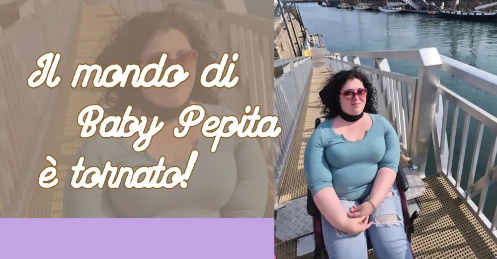

Il mondo di Baby Pepita è tornato!

Il mondo di Baby Pepita è tornato, si!
Questo spazio è rimasto in silenzio dal 2024 .Non per mancanza di parole, ma perché la vita, nel frattempo, ha parlato più forte.In questo tempo sono successe molte cose.
Sono cambiata. Sono cresciuta. Mi sono persa e ritrovata più volte.
Ho fatto nuove scelte, ho attraversato trasformazioni fisiche e interiori, ho imparato ad ascoltarmi in modo diverso.Ho pubblicato un libro.
Sto per pubblicarne un altro. Ho fondato una piattaforma digitale per l’accessibilità, "HandiMap.it", perché l’inclusione non è un’idea astratta, ma una pratica quotidiana. Ho intrapreso la carriera accademica universitaria, per coronare finalmente uno dei miei sogni: la laurea.
(Ma sono ancora al primo anno, quindi c'è ancora un po' di tempo!).
Ho conosciuto limiti nuovi e nuove possibilità.
E soprattutto, ho imparato che il silenzio non è assenza: a volte è solo attesa interiore.
Qui, però, su Il mondo di Baby Pepita, non avevo raccontato nulla di tutto questo. Questo blog è rimasto fermo, mentre io andavo avanti.
Eppure, nonostante il tempo, nonostante i cambiamenti, questo resta il mio mondo.Il mio angolo di sfogo.Il luogo della condivisione sincera, senza filtri inutili.
Lo spazio dove posso essere fragile, forte, confusa, lucida. Vera. Ripartire da qui oggi non significa tornare indietro. Significa tornare con qualcosa in più.Il mondo di Baby Pepita non è più lo stesso di prima.
E nemmeno io. Ma fa parte di me.
Ma è proprio questo il senso di crescere senza cancellarsi, evolvere senza rinnegare ciò che si è stati.
cosa sarà il mondo di Baby Pepita?
Questo spazio non nasce per insegnare, ma per condividere. Per chi si sente in trasformazione, per chi cambia pelle, per chi cerca parole che non fanno rumore ma restano.
Dunque, da oggi questo spazio si aggiornerà, cambierà ritmo, voce, profondità. Accoglierà nuove storie, nuovi pensieri, nuove battaglie, nuove domande.Non prometto costanza perfetta, ma presenza autentica.
Se sei arrivato fin qui, grazie.
Se torni, ancora grazie.
Se resti, benvenuto.
Il mondo di Baby Pepita è tornato.
E questa volta che I form e più vera!